Source image, saved anatomical outlines and scale endpoints. Unfinished fields are NA.
Provisional digitization; inspect anatomical boundaries.
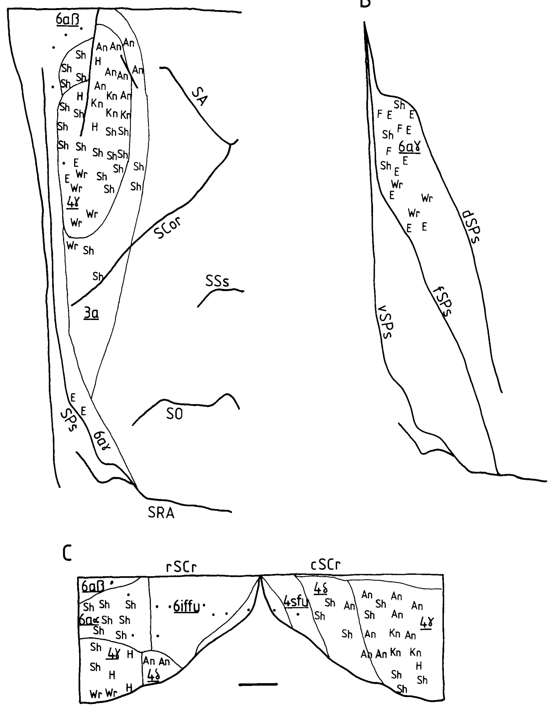
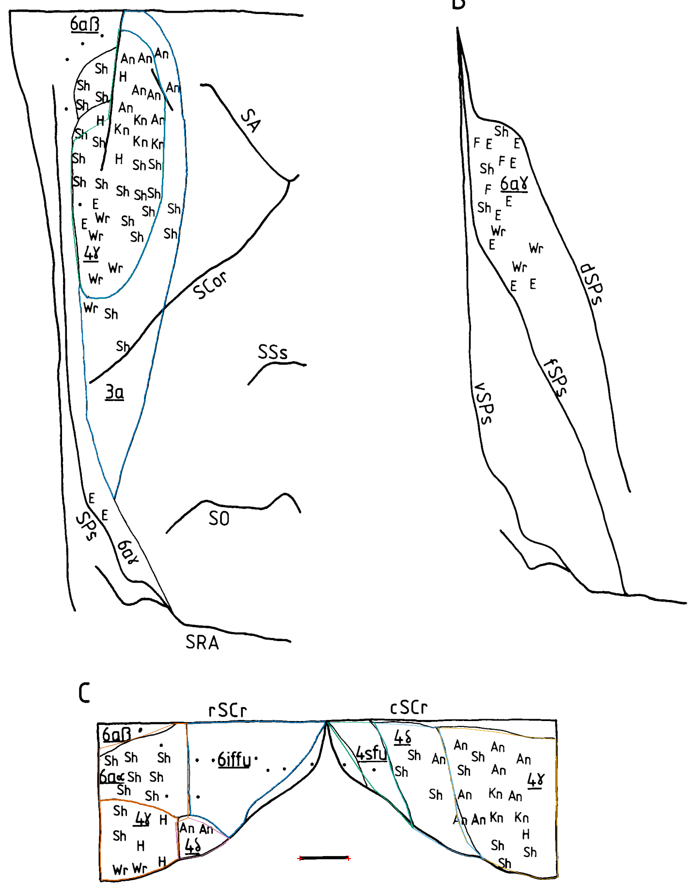
| Field | mm² | % neocortex | Status |
|---|---|---|---|
| 4gamma_dorsolateral_component | 29.703 | NA | provisional; anatomical review required |
| 3a_dorsolateral_component | 30.995 | NA | provisional; anatomical review required |
| 4gamma_rostral_cruciate_bank | 9.123 | NA | provisional; anatomical review required |
| 4delta_rostral_cruciate_bank | 2.465 | NA | provisional; anatomical review required |
| 4gamma_caudal_cruciate_bank | 23.402 | NA | provisional; anatomical review required |
| 4delta_caudal_cruciate_bank | 11.273 | NA | provisional; anatomical review required |
| 4sfu_caudal_cruciate_bank | 5.028 | NA | provisional; anatomical review required |
| 6iffu_rostral_cruciate_bank | 17.052 | NA | provisional; anatomical review required |
| 6aalpha_rostral_cruciate_bank | 10.836 | NA | provisional; anatomical review required |
| whole_M1 | NA | NA | not_measurable |
| S1_3b | NA | NA | not_measurable |
| 6agamma_presylvian_bank | NA | NA | not_measurable |
Provisional digitization; inspect anatomical boundaries.
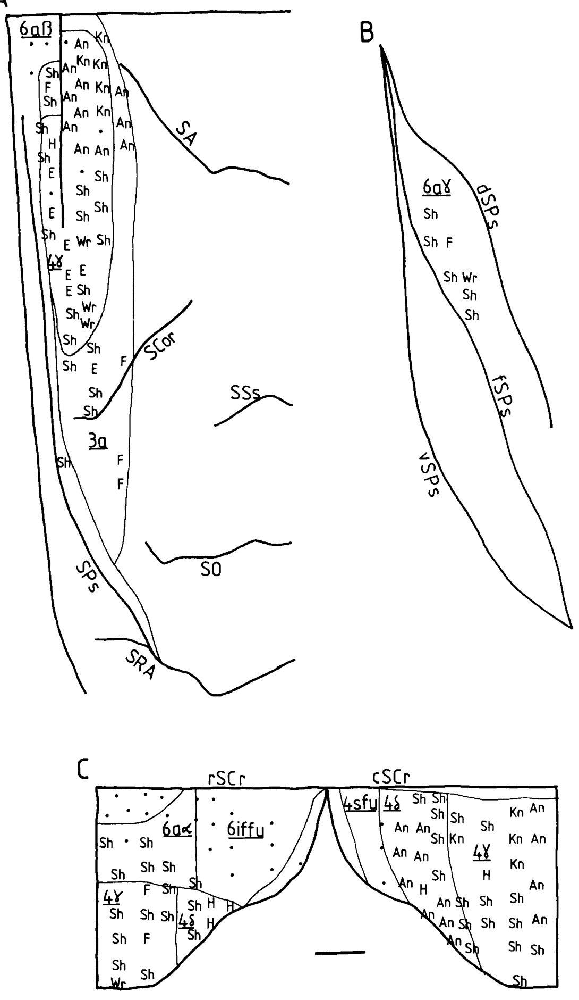
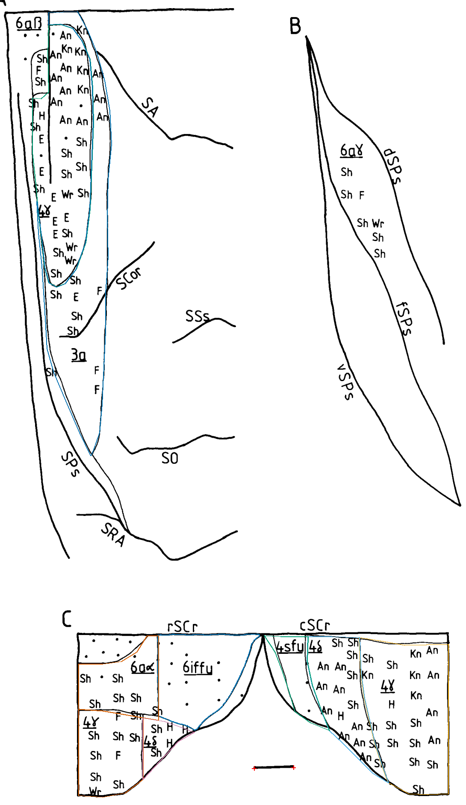
| Field | mm² | % neocortex | Status |
|---|---|---|---|
| 4gamma_dorsolateral_component | 31.536 | NA | provisional; anatomical review required |
| 3a_dorsolateral_component | 32.971 | NA | provisional; anatomical review required |
| 4gamma_rostral_cruciate_bank | 13.347 | NA | provisional; anatomical review required |
| 4delta_rostral_cruciate_bank | 3.923 | NA | provisional; anatomical review required |
| 4gamma_caudal_cruciate_bank | 29.896 | NA | provisional; anatomical review required |
| 4delta_caudal_cruciate_bank | 15.040 | NA | provisional; anatomical review required |
| 4sfu_caudal_cruciate_bank | 6.461 | NA | provisional; anatomical review required |
| 6iffu_rostral_cruciate_bank | 17.822 | NA | provisional; anatomical review required |
| 6aalpha_rostral_cruciate_bank | 12.009 | NA | provisional; anatomical review required |
| 6agamma_presylvian_bank | NA | NA | not_measurable |
| whole_M1 | NA | NA | not_measurable |
| S1_3b | NA | NA | not_measurable |
Provisional digitization; inspect anatomical boundaries.
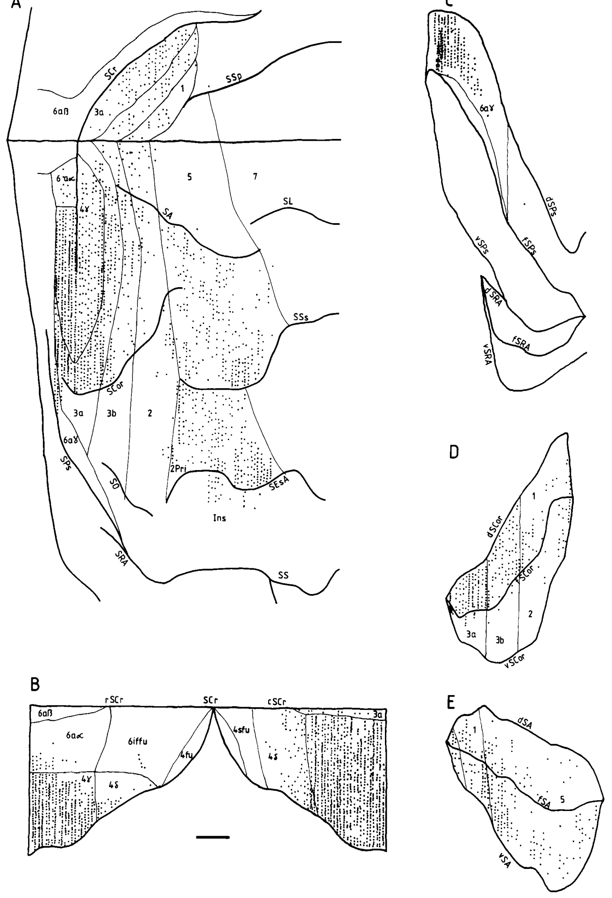
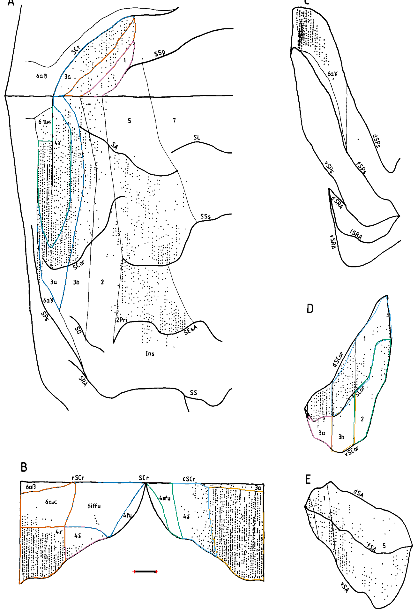
| Field | mm² | % neocortex | Status |
|---|---|---|---|
| 4gamma_dorsolateral_component | 27.111 | NA | provisional; anatomical review required |
| 3a_dorsolateral_component | 27.269 | NA | provisional; anatomical review required |
| 4gamma_rostral_cruciate_bank | 17.428 | NA | provisional; anatomical review required |
| 4delta_rostral_cruciate_bank | 6.434 | NA | provisional; anatomical review required |
| 4gamma_caudal_cruciate_bank | 34.222 | NA | provisional; anatomical review required |
| 4delta_caudal_cruciate_bank | 16.417 | NA | provisional; anatomical review required |
| 4sfu_caudal_cruciate_bank | 6.276 | NA | provisional; anatomical review required |
| 6iffu_rostral_cruciate_bank | 21.690 | NA | provisional; anatomical review required |
| 6aalpha_rostral_cruciate_bank | 15.677 | NA | provisional; anatomical review required |
| 3a_coronal_bank | 4.044 | NA | provisional; anatomical review required |
| 3b_coronal_bank | 7.701 | NA | provisional; anatomical review required |
| area1_coronal_bank | 21.039 | NA | provisional; anatomical review required |
| area2_coronal_bank | 13.932 | NA | provisional; anatomical review required |
| 3a_medial_component | 14.374 | NA | provisional; anatomical review required |
| 3b_medial_component | 9.467 | NA | provisional; anatomical review required |
| area1_medial_component | 6.514 | NA | provisional; anatomical review required |
| whole_M1 | NA | NA | not_measurable |
Provisional digitization; inspect anatomical boundaries.
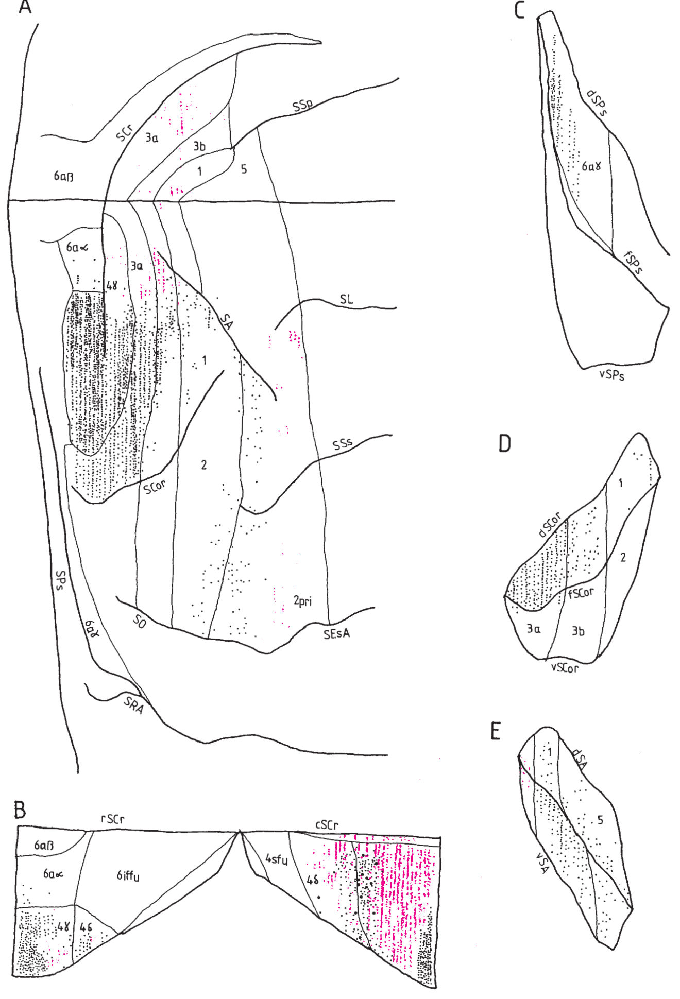
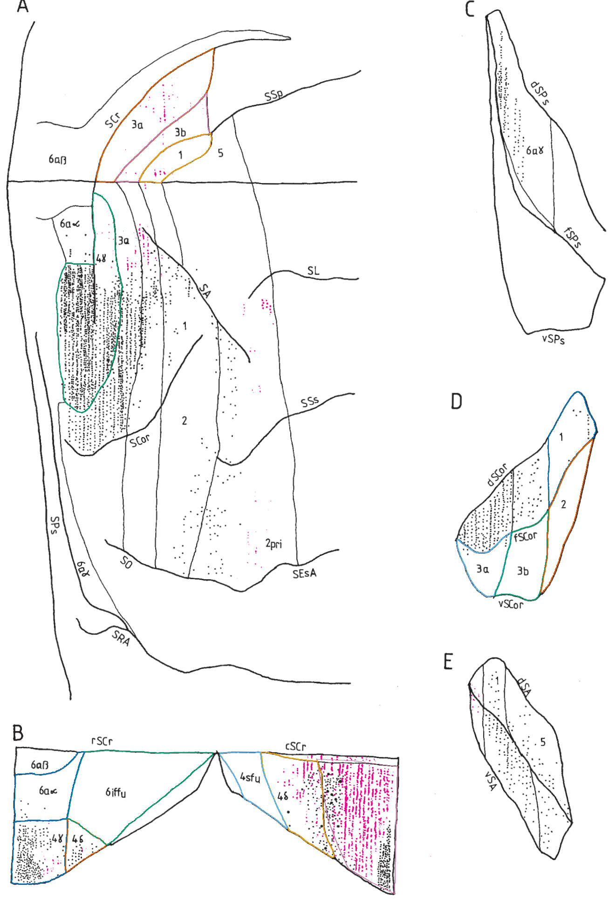
| Field | mm² | % neocortex | Status |
|---|---|---|---|
| 4gamma_dorsolateral_component | NA | NA | provisional; anatomical review required |
| 4gamma_rostral_cruciate_bank | NA | NA | provisional; anatomical review required |
| 4delta_rostral_cruciate_bank | NA | NA | provisional; anatomical review required |
| 4gamma_caudal_cruciate_bank | NA | NA | provisional; anatomical review required |
| 4delta_caudal_cruciate_bank | NA | NA | provisional; anatomical review required |
| 4sfu_caudal_cruciate_bank | NA | NA | provisional; anatomical review required |
| 6iffu_rostral_cruciate_bank | NA | NA | provisional; anatomical review required |
| 6aalpha_rostral_cruciate_bank | NA | NA | provisional; anatomical review required |
| 3a_medial_component | NA | NA | provisional; anatomical review required |
| 3b_medial_component | NA | NA | provisional; anatomical review required |
| area1_medial_component | NA | NA | provisional; anatomical review required |
| 3a_ventral_coronal_bank | NA | NA | provisional; anatomical review required |
| 3b_ventral_coronal_bank | NA | NA | provisional; anatomical review required |
| area1_coronal_bank | NA | NA | provisional; anatomical review required |
| area2_coronal_bank | NA | NA | provisional; anatomical review required |
| whole_M1 | NA | NA | not_measurable |
Provisional digitization; inspect anatomical boundaries.
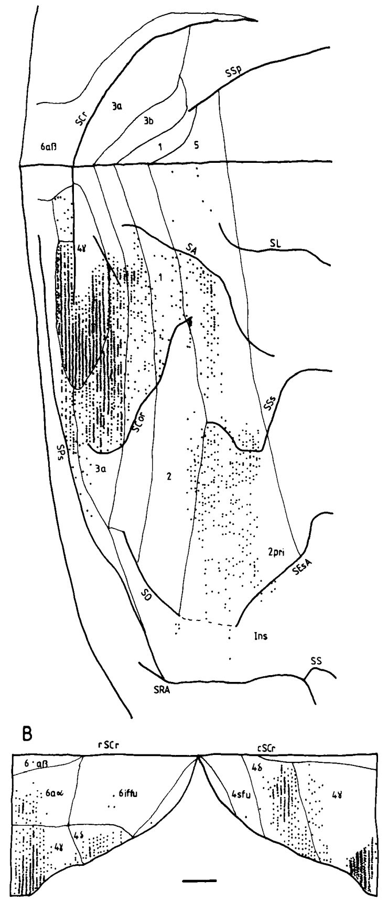
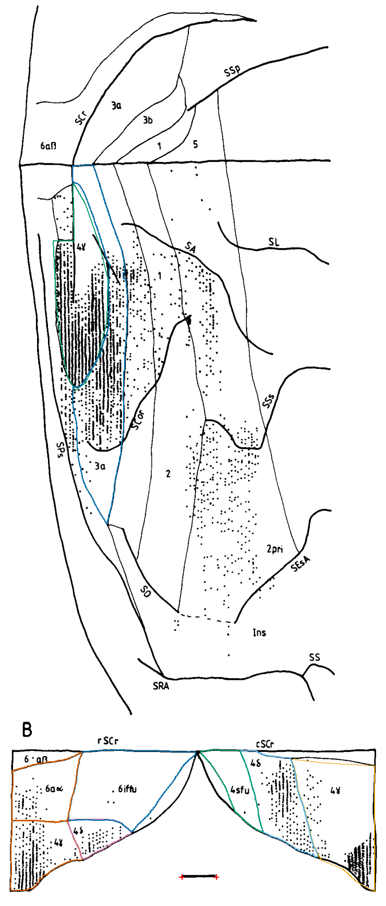
| Field | mm² | % neocortex | Status |
|---|---|---|---|
| 4gamma_dorsolateral_component | 23.475 | NA | provisional; anatomical review required |
| 3a_dorsolateral_component | 32.756 | NA | provisional; anatomical review required |
| 4gamma_rostral_cruciate_bank | 12.147 | NA | provisional; anatomical review required |
| 4delta_rostral_cruciate_bank | 5.179 | NA | provisional; anatomical review required |
| 4gamma_caudal_cruciate_bank | 25.390 | NA | provisional; anatomical review required |
| 4delta_caudal_cruciate_bank | 14.253 | NA | provisional; anatomical review required |
| 4sfu_caudal_cruciate_bank | 7.255 | NA | provisional; anatomical review required |
| 6iffu_rostral_cruciate_bank | 22.628 | NA | provisional; anatomical review required |
| 6aalpha_rostral_cruciate_bank | 12.067 | NA | provisional; anatomical review required |
| whole_M1 | NA | NA | not_measurable |
Provisional digitization; inspect anatomical boundaries.
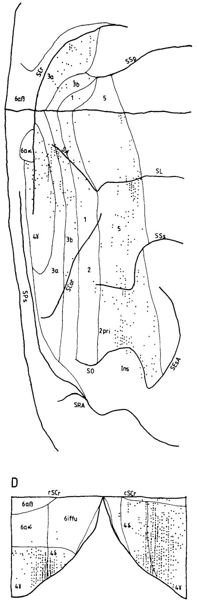
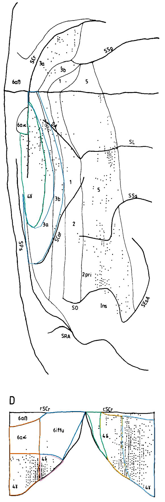
| Field | mm² | % neocortex | Status |
|---|---|---|---|
| 4gamma_dorsolateral_component | 24.273 | NA | provisional; anatomical review required |
| 3a_dorsolateral_component | 25.888 | NA | provisional; anatomical review required |
| 4gamma_rostral_cruciate_bank | 12.263 | NA | provisional; anatomical review required |
| 4delta_rostral_cruciate_bank | 4.043 | NA | provisional; anatomical review required |
| 4delta_caudal_cruciate_bank | 12.507 | NA | provisional; anatomical review required |
| 4gamma_caudal_cruciate_bank | 23.686 | NA | provisional; anatomical review required |
| 4sfu_caudal_cruciate_bank | 3.836 | NA | provisional; anatomical review required |
| 6iffu_rostral_cruciate_bank | 17.306 | NA | provisional; anatomical review required |
| 6aalpha_rostral_cruciate_bank | 10.253 | NA | provisional; anatomical review required |
| whole_M1 | NA | NA | not_measurable |
Second precision pass: source/before/after comparisons and remaining limitations